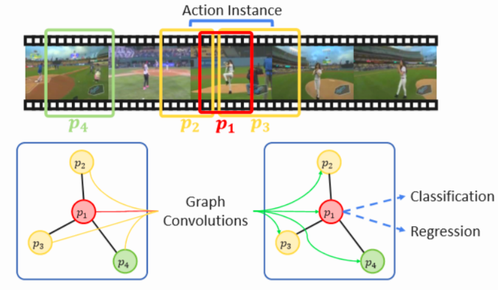
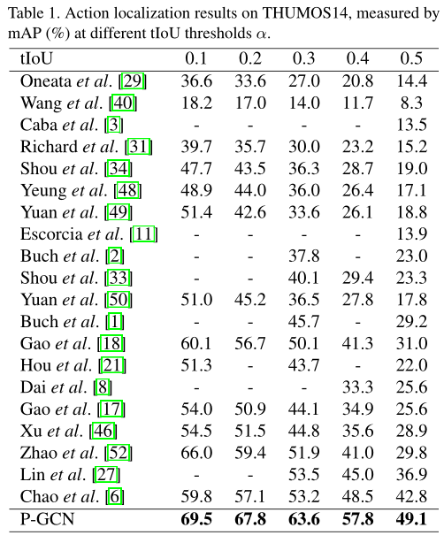
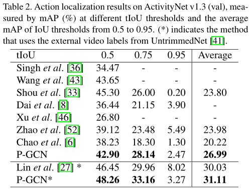

本周工作
Graph Convolutional Networks for Temporal Action Localization [2019 ICCV]
motivation
目前二阶段TAL方法：首先生成一系列时序提名，再分别对每个提名做分类和边界回归。在这个learning过程中没有利用proposal之间的关系。但事实是，proposal之间的关系在TAL中扮演着非常重要的角色，于是作者提出使用Graph Convolutional Networks来探索proposal之间的关系。
方法
构建图
上下文边（Contextual Edges）
当 ，我们就在proposal
和
之间建立一条边， 这里
是一个特定的阈值，
代表proposal之间的相关性，被tIoU定义。
周围边（Surrounding edges）
上下文边将重叠proposal连接起来，而这些proposal通常对应相同的action instance。事实上，也可以将种类不同但是nearby的动作（包括背景）关联起来，并且它们之间传递的信息将有助于彼此检测。
为了处理这种相关性，我们首先利用 查询不同种类的提议，然后计算以下距离，如果
就在nearby proposals之间添加边。

实验


实验结果分析
- 在THUMOS14上的实验结果很好。
- 在activitynet上的结果仅仅利用P-GCN结果不是很好。添加了UntrimmedNet网络的结果才超过了BSN的结果。
思考
在activitynet上可能是一个视频大部分都是只有一个动作，并且行为类别数比较多，不能很好的发挥提议与提议之间的关系。
图卷积方法
最大的贡献是发掘了proposal之间潜在的关系。
图的边是人为定的，可能存在误差。有没有可能把构建图的过程也变成网络学习的过程？
计划
- 目前对上学期的论文调研已经做了总结，接下来要尽快完成TAL领域的综述 并发表。（1~2个月）
- 时序动作定位领域继续学习新的论文、做实验，尽早确定具有可行性方法思路。（一项长期工作。计划：每周至少学习1~2篇论文，每两周完整地仿真一篇论文；所有论文阅读和实验做好整理和归纳）
- 希望可以结合一些具体的项目来进一步锻炼自己的代码能力。（如果有的话）